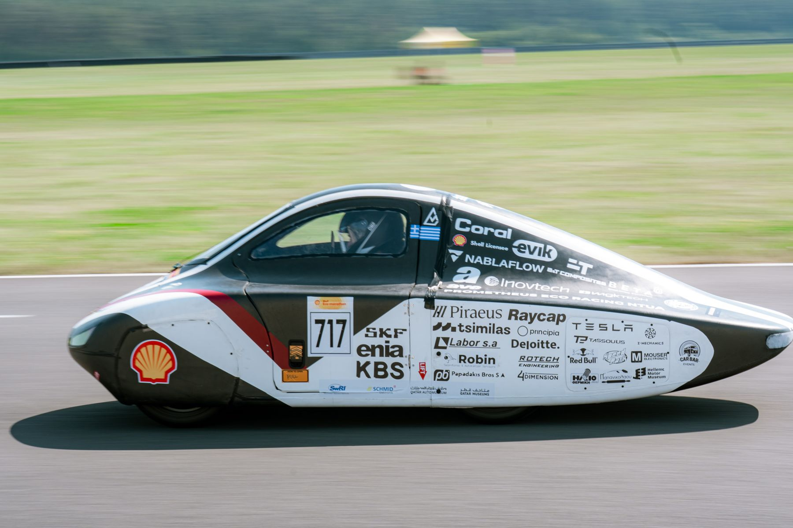
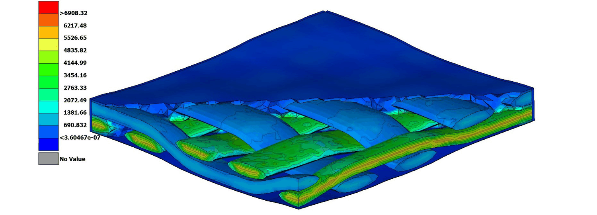
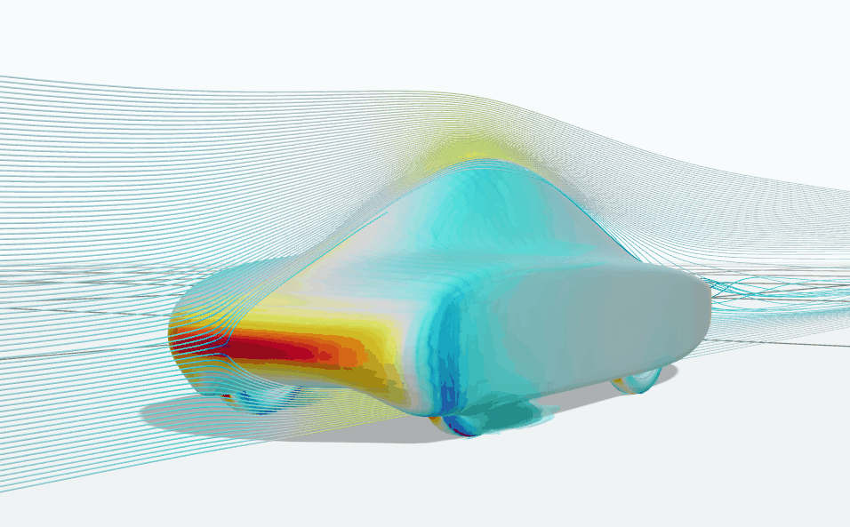
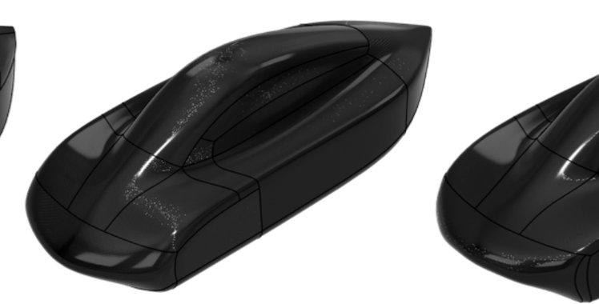

Prometheus Eco Racing (NTUA) / Case study
PYRFOROS IV.
Fourth-generation ultra-efficient prototype for the Shell Eco-marathon — designed, built, and raced with one target: the most kilometres out of every kilowatt-hour.

FIG. 01 — PYRFOROS IV · Shell Eco-marathon Europe 2026
Overview
PYRFOROS IV is the fourth-generation prototype from Prometheus Eco Racing, NTUA's Shell Eco-marathon team. As Head of Mechanical Engineering, I directed the car's structural design, composites manufacturing, and aerodynamic development from concept through competition.
The car finished 7th in the Urban Concept Battery-Electric category at Shell Eco-marathon Europe 2026, at 201.97 km/kWh — roughly 2.5× the efficiency of the prior generation — and won the Vehicle Design Award. It's also a clean-sheet platform: 80 kg kerb mass (−38% vs. the previous generation) and a 71% smaller drag area, achieved in a single 6-month programme (full generational comparison in Section 05). None of that geometry existed until a lap-simulation energy budget set the targets first — the concept & architecture case study covers that budget and the four decisions it produced.
- Structural design & CFRP monocoque
- CFD-driven bodywork development
- FEA validation of chassis & suspension
- Motor mechanical design & drivetrain layout
- Vehicle dynamics tuning
Chassis & composites
The bodywork is the chassis — a foam-core CFRP sandwich monocoque, replacing the previous generation's steel spaceframe and non-structural fairing outright. Laminate properties came from micro-mechanical RVE homogenization of the team's actual epoxy system rather than generic datasheet values, with ply count and orientation tailored to the FEA-driven load state at each location.
The structure was assessed across five load scenarios in EPILYSIS (static, cornering, acceleration, braking, and bump impact), with a Tsai–Wu failure check in META returning a minimum reserve factor ≥ 1.0 on every primary carbon layer. That assessment is simulation only: no physical structural test of the monocoque was run. The laminate itself was selected by a separate 19-candidate, four-load-case sweep, below. That validation — plus the suspension isolating road-shock energy before it reaches the shell (see Section 04) — let the monocoque down-gauge to a 2.1 mm average thickness. Every CFRP-to-aluminium joint (clevises, mounting brackets) carries a glass-fibre isolation layer against galvanic corrosion, validated to a safety factor of 3.
The shell is laid up regionally, not uniformly: four different stacks assigned by region, an extra twill ply where the handles and local reinforcements sit, the core dropped where it would be pierced, and an aluminium 6061 layer embedded only where the suspension attaches. The monocoque case study sets out all four stacks, the five load cases with their magnitudes, and why the material properties were homogenised rather than looked up.

The production laminate came out of a 19-iteration layup sweep: every candidate stack was simulated across four load cases — weight, bump, braking, and turn — and held under a failure index of 1, then scored on a weighted blend of mass (55%), displacement (35%), and failure index (10%). The highest-scoring stack won — 11.75 kg simulated shell mass, its worst-case failure index of 0.371 and displacement of 12.4 mm both arriving in the bump case.
Drag to rotate · axes: mass (x) · failure index (y) · displacement (z)
Mass [kg] (x) · failure index (y) · displacement [mm] (z) · drag or touch to rotate
View as table
| Sim | Mass [kg] | Max FI | Max disp [mm] | Score |
|---|---|---|---|---|
| 3 — Suspension Core | 10.33 | 0.881 | 33.2 | 2.222 |
| 4 — Core Seat | 10.64 | 0.879 | 30.8 | 2.165 |
| 5 | 11.27 | 0.867 | 25.7 | 2.073 |
| 6 | 11.39 | 0.865 | 24.3 | 2.076 |
| 8 | 11.6 | 0.727 | 17 | 2.440 |
| 20 — selected | 11.75 | 0.371 | 12.43 | 2.995 |
| 9 | 11.9 | 0.727 | 16.9 | 2.241 |
| 7 | 12 | 0.702 | 16.8 | 2.200 |
| 19 | 12.7 | 0.4 | 9.66 | 2.350 |
| 11 | 12.7 | 0.506 | 15.1 | 2.004 |
| 13 | 12.88 | 0.505 | 13.4 | 1.990 |
| 12 | 12.9 | 0.507 | 13.2 | 1.988 |
| 21 — 5mm Core | 13.4 | 0.3 | 11.01 | 1.939 |
| 10 | 13.6 | 0.7 | 16.2 | 1.544 |
| 16 | 13.7 | 0.445 | 11.7 | 1.728 |
| 14 | 13.91 | 0.377 | 11.96 | 1.668 |
| 18 | 13.99 | 0.362 | 8.2 | 1.767 |
| 15 | 14.43 | 0.371 | 9.53 | 1.571 |
| 17 | 14.73 | 0.35 | 9.24 | 1.496 |
Aerodynamics & CFD

A lap-simulation model calibrated to the Poland circuit found aerodynamic drag responsible for 48% of total lap energy — more than any other loss mechanism — so the exterior shape was treated as the primary efficiency lever, not a styling exercise. The fully enclosed-wheel "fastback" silhouette wasn't a stylistic choice either: a component-level drag audit found the wheel enclosures still account for 40.35% of total drag even fully concealed — 2.290 N of a 5.676 N total, against 3.386 N for the fuselage itself. The full component breakdown, and the small net downforce logged as a cost rather than a benefit, are on the aerodynamics case study.
The exterior was iterated across 7 versions (V1–V7) on NablaFlow AeroCloud, with solver reports dated 22 October to 15 December 2025 (29.99M-cell mesh, moving ground plane, active wheel rotation), cutting the drag coefficient from 0.299 to 0.111 — referenced to a frontal area of 0.882 m², itself down from 1.147 m² on the previous generation — and drag area by 71% overall (full comparison in Section 05). At the frozen shape total drag is 5.68 N: 3.44 N pressure and 2.24 N viscous, a 60.6 / 39.4% split. Every candidate surface was checked in the same pass for Ackermann steering clearance and manufacturability before being sent for CFD evaluation, so nothing reached the freeze needing a post-hoc compromise.
The quality-tier progression
Seven exterior versions were run, and complete solver reports now exist for all of them. The four below step through the service's quality tiers — including the one that argues against the headline number. On 10 November the drag coefficient went up, 0.118 to 0.124, while drag area went down, 0.110 to 0.106 m². Nothing had regressed: frontal area had been cut from 0.9306 to 0.8550 m², and Cd is normalised on that area. The car only ever felt CdAf. That single step is the drag-area-not-drag-coefficient argument playing out in our own data, and it is a better argument than the −63% headline.
| Report date | Cells | Af [m²] | Cd | CdAf [m²] |
|---|---|---|---|---|
| 22 Oct 2025 | 5,029,697 | 0.9301 | 0.145 | 0.135 |
| 30 Oct 2025 | 16,029,989 | 0.9306 | 0.118 | 0.110 |
| 10 Nov 2025 | 15,940,897 | 0.8550 | 0.124 | 0.106 |
| 15 Dec 2025 — frozen | 29,990,000 | 0.8820 | 0.111 | 0.098 |
Source: four of the seven NablaFlow AeroCloud reports on file, marking each step of the service's quality tier — BodyShell_Test_42d8bb, BodyShell_efbf6b, BodyShell_325c53, Body_Shell_f59d02 — all at yaw 0°. The solver setup, and the three things the service does not disclose about it, are set out on the aerodynamics case study.
Off axis: the yaw sweep
A separate ten-angle yaw sweep was run on a later body, and it is the more interesting result. Side force dominates: the side-force coefficient reaches Cs = 1.759, an order of magnitude above the drag coefficient the car is sold on. Drag does not simply fall away off axis either — it rises first, peaking at Cd 0.146 at 30° yaw, 36% above the same run’s own zero-yaw value. And the reported yaw-moment coefficient rises from Cy −0.196 at 15° to 2.072 at 135°, before falling to approximately zero at 180° — the sweep spans 0–180°, and the sign convention and moment reference are not stated in the export. A real crosswind at modest yaw costs meaningfully more than the headline figure suggests, and it loads the car sideways far harder than it loads it rearwards. That is the honest caveat on a low Cd, and it is the load case the headline number does not describe.
| Yaw [°] | Cd | Cs | Cl | Cy |
|---|---|---|---|---|
| 0 | 0.107 | 0.000 | −0.266 | 0.000 |
| 15 | 0.136 | 0.502 | 0.213 | −0.196 |
| 30 | 0.146 | 1.159 | 1.077 | −0.073 |
| 45 | 0.035 | 1.673 | 1.266 | 0.137 |
| 75 | −0.126 | 1.690 | 0.119 | 0.628 |
| 90 | −0.151 | 1.631 | −0.269 | 0.946 |
| 105 | −0.162 | 1.665 | 0.189 | 1.402 |
| 135 | 0.002 | 1.759 | 2.169 | 2.072 |
| 165 | −0.201 | 0.424 | 0.688 | 0.845 |
| 180 | −0.192 | 0.007 | 0.309 | −0.003 |
Source: Yaw_02f416.pdf, NablaFlow AeroCloud, 10 June 2026, 199 pp. Note: a different, later body than the December geometry in the table above — its own zero-yaw Cd is 0.107, not 0.111, and the frontal area it implies is 0.888 m², not 0.8820. The two runs are not interchangeable; every number in this table belongs to this run only.
Structures & vehicle dynamics
The previous generation ran rigid and un-sprung, transmitting vertical impact loads over 4.5g straight into the chassis and forcing an over-engineered, heavier layup to avoid delamination. PYRFOROS IV replaces that with a double-wishbone front / trailing-arm rear system on a clevis mounting interface, acting as a structural low-pass filter: peak transmitted chassis loads dropped 65%, and on-track coast-down testing measured a further 12% cut in rolling resistance on uneven surfaces. The platform can be re-tuned for a different circuit surface by hardware alone.
The suspension loads trace to a documented derivation, and the dampers to a shock dynamometer rather than to a catalogue — five rebound and gas-pressure settings, 118 to 191 J of energy dissipated per cycle across the range. The suspension case study carries the input loads, the joint-by-joint resolution, the damper characterisation and the steering geometry, including which parts of the steering work were a teammate’s.
The wheels moved from heavy aluminium rims to CFRP, but the rim and wall aren't a from-scratch PIV design — they're the Master's thesis wheel carried over unchanged: same ER-25S2xx drawing series, same tyre, hoop and wall masses identical to the thesis part to the gram (278 g and 284 g). Only the central hub was revised, to package the belt final-drive pulley and PIV's own mounting interface. A CFRP wheel structure designed and validated on one vehicle, adopted unchanged by a different team on a different platform, and re-validated to the same Tsai–Wu reserve-factor standard as the monocoque under PIV's own transient bump-load case, with rotational inertia rather than mass alone driving the analysis: spin-up losses are invisible to steady-state drag but real under the circuit's compulsory stop-and-go. The drive motor's mechanical design and the 6:1 belt drivetrain around it are covered in their own case study.

PYRFOROS III → PYRFOROS IV
Every decision above traces back to one lap-simulation energy budget for the Poland circuit: 48% of lap energy lost to aerodynamic drag, 26% to rolling resistance (mass). Against the previous-generation car — measured mass, reported competition efficiency, CFD-predicted aerodynamics — here's where that went:
Results
7th in class
~202 km/kWh
Vehicle Design Award Winner
Subsystem case studies

Concept & Architecture
A point-mass lap-simulation energy budget, 48% drag and 26% mass, run before the detailed geometry was defined — the enclosed-wheel packaging decision and the four architecture changes it produced.
Case study →Monocoque & Composites
A load-bearing CFRP sandwich shell at 2.1 mm average thickness — RVE-homogenised laminate, four regional ply stacks, five load cases at Tsai–Wu RF ≥ 1.0.
Case study →Aerodynamics & CFD
Cd 0.111 (CFD) on a 0.882 m² frontal area — a component drag audit putting 40.35% on the wheel enclosures, lift logged as a cost, and what the solver report does not state.
Case study →
Suspension & Steering
Double-wishbone front and trailing-arm rear where the last car was rigid — dampers characterised across five settings on a shock dynamometer, near-ideal Ackermann steering, and 30 individually replaceable parts.
Case study →
Motor & Drivetrain — Mechanical Design
Mechanical design of the in-house drive motor and its 6:1 belt drivetrain — lap-simulation-sized, −20 kg powertrain mass vs. the prior generation.
Case study →